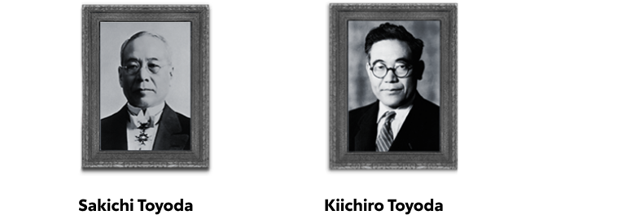

Sistema Toyota de Produção (Toyota Production System)
TPS é a sigla para Toyota Production System ou, em português, Sistema Toyota de Produção. Trata-se de uma cultura organizacional que tem como objetivo expor e resolver os problemas nos mais diversos ambientes e situações. No TPS, os esforços são concentrados para eliminar os três Ms: Muri, Mura e Muda.
História
Em 1918, Sakichi Toyoda desenvolveu um tear automático a vapor que pela primeira vez na história conseguia detectar um fio quebrado e parar a produção automaticamente. Esta inovação levou ao amplo princípio de jidoka, que atualmente é um dos pilares do TPS.
Em 1937, o filho de Sakichi, Kiichiro Toyoda, fundou a Toyota Motor Corporation. Ele usou o princípio de jidoka criado por seu pai para desenvolver seu próprio conceito – just-in-time – que se tornou o outro pilar do TPS.
Após a II Guerra Mundial, a necessidade de tornar a produção mais eficiente cresceu. Um dos engenheiros mais jovens da Toyota, Taiichi Ohno, recebeu a tarefa de aumentar a produtividade da empresa. O objetivo de Ohno era usar o conceito de just-in-time aliado ao princípio de jidoka. Em 1953, durante uma viagem aos Estados Unidos, o engenheiro notou como os clientes pegavam os produtos das prateleiras nos supermercados: somente o que era necessário, no momento necessário e na quantidade necessária. Em seu retorno ao Japão, Ohno desenvolveu o kanban, uma técnica que utiliza cartões de informação para controlar a produção de acordo com a necessidade. Hoje, Ohno é conhecido como o pai do TPS, por ter desenvolvido e aplicado o processo nas fábricas.
O TPS foi sendo desenvolvido e refinado ao longo das décadas. Hoje, ele pode ser aplicado aos mais variados tipos de negócios das esferas pública e privada.
Hospital Santa Cruz
Em 2017, a Toyota dividiu a experiência do TPS com o Hospital Santa Cruz, um dos centros médicos mais conhecidos da cidade de São Paulo. Após reestruturar o espaço e reorganizar das funções, o tempo de espera dos pacientes diminuiu 30 minutos.